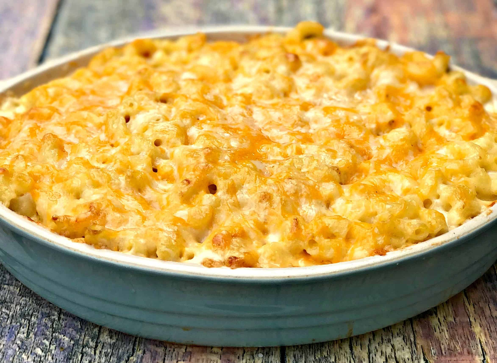

Mac and Cheese

Classic delicious, creamy, oven baked Mac and Cheese
Nothing says comfort food quite like some homemade delicious, mouth watering Mac and Cheese.
Using ingredients found in your kitchen along with following the easy steps below, you can recreate this mouth watering recipe.
Ingredients
- 8 ounce uncooked macaroni
- 3 tablespoons unsalted butter
- 2 tablespoons flour
- 1 12-ounce can evaporated milk
- 1 cup half and half
- 1/2-1 tablespoon onion powder
- 2 teaspoons garlic powder
- 1/4 teaspoon cayenne pepper
- 1/2 cup mozzarella cheese grated
- 1/2 cup sharp cheddar cheese grated
- 1/2 cup jack cheese
- salt and pepper to taste
Cooking Instructions
- Preheat your oven to 375F/190C.
- Cook macaroni according to package directions. Drain.
- Add butter to a skillet, as soon as butter melts whisk in flour. Continue whisking until flour is fully mixed with butter. Then cook for about a minute to get rid of the flour taste.
- Slowly add the evaporated milk a little at a time, followed by the half and half; you do not want the mixture to form any lumps. Simmer for about 3-5 minutes until the mixture thickens slightly.
- Add your seasonings; onion and garlic powder, and cayenne pepper.
- Bring to a simmer and let it simmer gently for about about 2 minutes.
- Stir in all your cheeses (reserving some as toppings for later), and continue stirring until everything's melted, evenly combined, and smooth. Add salt and pepper to taste.
- Add the cooked pasta to the pot, and stir to incorporate evenly.
- Transfer the pasta and sauce mixture to a pan or a lightly greased 2-quart baking dish; top with the remaining cheese.
- Bake at 375F/190C for 20 minutes or until golden and bubbly